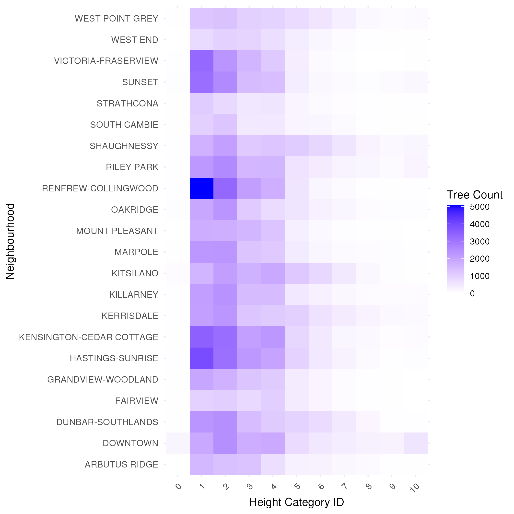
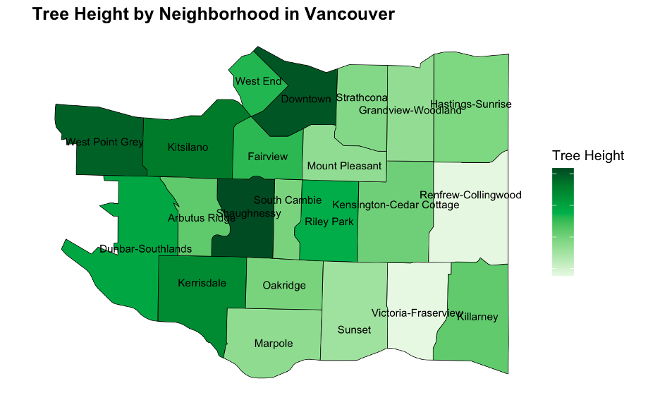

If you’re aspiring to be a data scientist or analyst, Exploratory Data Analysis (EDA) is one of the most critical steps in any project you will encounter. Think of EDA as the foundation of your analysis, it’s where you familiarize yourself with your data, uncover patterns, and set the stage for meaningful insights. Skipping this step or performing it poorly can lead to misguided conclusions and wasted efforts.
In this blog, let’s dive into how to implement EDA effectively using an example from a project about Vancouver Tree Height Geography Analysis, where we explored variations in tree heights across the city’s neighborhoods. Whether you’re analyzing trees, customer behavior, or healthcare data, the lessons from this project apply universally to all aspiring data scientists.
What Is EDA and Why Is It Important?
 Exploratory Data Analysis (EDA) is a critical step in any data science workflow. It’s where you familiarize yourself with your data, uncover patterns, and set the stage for meaningful insights. Skipping this step or performing it poorly can lead to misguided conclusions and wasted efforts.
Exploratory Data Analysis (EDA) is a critical step in any data science workflow. It’s where you familiarize yourself with your data, uncover patterns, and set the stage for meaningful insights. Skipping this step or performing it poorly can lead to misguided conclusions and wasted efforts.
EDA helps you:
- Understand Your Dataset: Learn about the structure, quality, and key features of your data.
- Spot Trends and Anomalies: Identify patterns, clusters, or unexpected values that may require attention.
- Shape Your Analysis: Refine your questions and determine the most promising directions for further exploration.
In our Vancouver Tree Project, EDA allowed us to explore tree height distributions across neighborhoods and informed our approach to testing whether these variations were significant.
Steps for Effective EDA
1. Start with a Clear Objective
Every great EDA begins with a specific question or goal. For our project, the question was: Do tree heights vary across neighborhoods in Vancouver? This focus ensured our analysis was targeted and relevant.
Pro Tip: Define your objective early and use it as a guide throughout the EDA process. This prevents you from getting sidetracked by unrelated patterns.
2. Load and Inspect Your Data
Before analyzing anything, start by understanding the structure and quality of your dataset. For our project, the data included tree height categories, neighborhood names, and other details. Here’s what we did:
- Check Data Structure: How many rows and columns are there? What are the variable types?
- Identify Missing Values: Are there gaps in the data that need attention?
- Preview the Data: Use simple commands like head() or summary() in R or Python to get a quick snapshot.
For example, we discovered inconsistent capitalization in neighborhood names, which needed to be standardized before further analysis.
Key Takeaway: Understanding your data early saves time and helps you spot potential issues before they become major obstacles.
3. Clean the Data
Dirty data is the enemy of meaningful analysis. In our Vancouver project, we cleaned the data by: - Standardizing Formats: Ensuring consistent capitalization for neighborhood names to avoid grouping errors. - Handling Missing Data: Excluding neighborhoods with incomplete tree height data to maintain accuracy. - Removing Duplicates: Eliminating repeated entries to prevent bias in the analysis.
Pro Tip: Data cleaning might not be glamorous, but it’s critical. Invest time in this step to ensure your analysis is accurate and reliable.
4. Use Visualizations to Uncover Patterns
Visualization is one of the most powerful tools in EDA. It allows you to see trends, anomalies, and relationships that might not be obvious in raw data. In our project, we used:
- Bar Charts: To compare tree height distributions across neighborhoods.
- Heatmaps: To visualize variations in average tree height across the city spatially.

- More: To further improve our plots, we could actually combine area map and heatmaps to make them more appealing.

For example, we observed that neighborhoods like Downtown and Shaughnessy had taller trees, while Victoria-Fraserview and Renfrew-Collingwood were dominated by shorter ones. These patterns raised important questions about urban planning and environmental factors.
Key Takeaway: Use tools like ggplot2 (R) or matplotlib (Python) to create visualizations that make your findings clear and compelling.
5. Quantify Your Observations
While visualizations are excellent for identifying patterns, summary statistics help validate those patterns. In our project, we calculated: - Average Tree Height: Across neighborhoods to compare height trends. - Height Range Distributions: To understand the proportion of tall vs. short trees.
These numbers confirmed the visual trends and provided a solid foundation for further analysis.
Pro Tip: Always pair visuals with numbers. Together, they create a stronger narrative.
6. Ask Questions and Iterate
EDA is an iterative process. Each observation might lead to new questions. For example, when we noticed shorter trees in certain neighborhoods, we asked: - Are these differences due to environmental factors like soil quality or space constraints? - Do these neighborhoods have fewer resources for tree maintenance?
These questions helped us refine our focus and consider new angles for analysis.
Key Takeaway: Stay curious and let your findings guide new questions, but don’t lose sight of your original objective.
7. Acknowledge Limitations
No dataset is perfect, and it’s important to recognize the limitations of your analysis. For our project, key limitations included:
- Missing Data: Some neighborhoods lacked complete tree height information.
- Categorical Data: Tree heights were grouped into ranges (e.g., 10–20 feet), limiting precision.
Pro Tip: Be transparent about what your data can and cannot tell you. This builds credibility and sets realistic expectations for your audience.
Challenges and Solutions in EDA
Challenge 1: Missing Data
Problem: Missing values can distort your findings if not handled carefully.
Solution: Use methods like imputation, exclusion, or sensitivity analysis based on your project’s needs.
Challenge 2: Overinterpretation
Problem: Patterns observed in EDA aren’t always meaningful.
Solution: Treat EDA as a discovery phase and validate findings with statistical methods or domain knowledge.
Challenge 3: Staying Focused
Problem: It’s easy to get lost in interesting but irrelevant patterns.
Solution: Keep referring back to your main question or objective.
Final Thoughts: EDA as a Foundation for Success
EDA isn’t just a step in the data science workflow—it’s the foundation for everything that follows. Whether you’re exploring tree data in Vancouver or customer behaviors in e-commerce, EDA helps you understand your data, refine your questions, and make informed decisions.
Aspiring data scientists, remember: Effective EDA isn’t about flashy techniques—it’s about curiosity, discipline, and attention to detail. Start your projects with a solid EDA process, and you’ll set yourself up for success in every analysis. Let Vancouver’s trees inspire you to dig deeper into your own data!